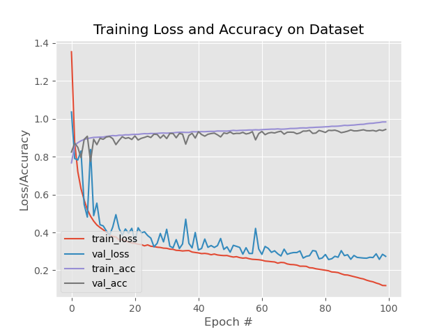

Deep Learning with Custom GoogleNet and ResNet in Keras and Xilinx Vitis AI |
|---|
Current status¶
Tested with Vitis AI 1.3
Tested in hardware on ZCU102 (all four CNNs)
Tested in hardware on VCK190 (missing miniResNet CNN)
Date: 9 Jan 2021
1 Introduction¶
In this Deep Learning (DL) tutorial, you will quantize in fixed point some custom Convolutional Neural Networks (CNNs) and deploy them on the Xilinx® ZCU102, ZCU104 and VCK190 boards using Vitis AI, which is a set of optimized IP, tools libraries, models and example designs valid for AI inference on both Xilinx edge devices and Alveo cards.
This tutorial includes:
four custom CNNs, from the simplest
LeNetandminiVggNetto the intermediateminiGoogleNetand the more complexminiResNet, as described in the custom_cnn.py file;two different datasets,
Fashion-MNISTandCIFAR-10, each one with 10 classes of objects.
Once the selected CNN has been correctly trained in Keras, the HDF5 file of weights is converted into a TF checkpoint and inference graph file, such frozen graph is then quantized by the Vitis AI Quantizer that creates an INT8 pb file from which the Vitis AI Compiler generates the xmodel file of micro instructions for the Deep Processor Unit (DPU) of the Vitis AI platform. The final C++ application is executed at run time on the ZCU102 target board, which is the default one adopted in this tutorial, see the Appendix for the ZCU104 and VCK190. The top-1 accuracy of the predictions computed at run time is measured and compared with the simulation results.
2 Prerequisites (¶
Ubuntu 16.04 host PC with Python 3.6.
The entire repository of Vitis AI stack release 1.3 from www.github.com/Xilinx.
Accurate reading of Vitis AI User Guide UG1414 v1.3. In particular:
1. "Vitis AI Overview" in Chapter 1 with DPU naming and guidelines to download the tools container available from [docker hub](https://hub.docker.com/r/xilinx/vitis-ai/tags) and the Runtime Package for edge (MPSoC) devices.
2. "Installation and Setup" instructions of Chapter 2 for both host and target;
3. "Quantizing the Model" in Chapter 4 and "Compiling the Model" in Chapter 5.
4. "Programming with VART" APIs in Chapter 6.
A Vitis AI Evaluation board such as either:
ZCU102 with its image file, which contains a pre-built working design for the ZCU102 with the DPUCZDX8G (renamed shortly as “DPUv2” in the following), or
VCK190 with its image file, which contains a pre-built working design for the VCK190 with the DPUCVDX8G (renamed shortly as “XVDPU”).
Familiarity with Deep Learning principles.
Dos-to-Unix Conversion¶
In case you might get some strange errors during the execution of the scripts, you have to pre-process -just once- all the*.sh shell and the python *.py scripts with the dos2unix utility.
In that case run the following commands from your Ubuntu host PC (out of the Vitis AI docker images):
sudo apt-get install dos2unix
cd <WRK_DIR> #your working directory
for file in $(find . -name "*.sh"); do
dos2unix ${file}
done
Vitis AI 1.2¶
If you need to use the older Vitis AI 1.2 release, just replace this README.md file with the one placed in the subfolder
vai_1v2 and go on in following the instructions on that file and the related vai_1v2.zip archive, then skip the rest of this document.
3 Before starting with Vitis AI 1.3¶
In the following of this document, it is assumed that you have cloned the Vitis AI stack release 1.2 and this is your working directory <WRK_DIR> (for example in my case I renamed it as ~/ML/VAI1v3).
To list the currently available docker images run:
docker images # to list the current docker images available in the host pc
and you should see something like in the following text:
REPOSITORY TAG IMAGE ID CREATED SIZE
xilinx/vitis-ai-gpu latest 1bc243fc037a 41 minutes ago 19GB
To launch the docker container with Vitis AI tools - to do all the steps from CNN training to generation of the ELF file for the DPU - based on CPU (or GPU), execute the following commands from the <WRK_DIR> folder:
cd <WRK_DIR> # you are now in Vitis_AI subfolder
./docker_run.sh xilinx/vitis-ai-gpu:1.3
conda activate vitis-ai-tensorflow
Note that the container maps the shared folder /workspace with the file system of the Host PC from where you launch the above command, which is <WRK_DIR> in your case.
This shared folder enables you to transfer files from the Host PC to the docker container and vice versa.
The docker container do not have any graphic editor, so it is recommended that you work with two terminals and you point to the same folder, in one terminal you use the docker container commands and in the other terminal you open any graphic editor you like.
Note that docker does not have an automatic garbage collection system as of now. You can use this command to do a manual garbage collection:
docker rmi -f $(docker images -f "dangling=true" -q)
3.1 Install Missing Packages on the Vitis AI Tools Container¶
This tutorial requires some packages that were not included in the original Vitis AI tools container. Here are the commands to include such packages:
cd <WRK_DIR>
./docker_run.sh xilinx/vitis-ai-gpu:1.3
sudo su # you must be root
conda activate vitis-ai-tensorflow # as root, enter into Vitis AI TF (anaconda-based) virtual environment
conda install seaborn # THIS ARE STILL NEEDED IN VAI 1.3 DOCKER TOOLS IMAGE
conda install pycairo==1.18.2 #not sure if needed by Vitis AI 1.3
# you cannot install next packages with conda, so use pip instead
pip install imutils==0.5.1 #not sure if needed by Vitis AI 1.3
conda deactivate
exit # to exit from root
conda activate vitis-ai-tensorflow # as normal user, enter into Vitis AI TF (anaconda-based) virtual environment
Note that if you exit from the current Docker Vitis AI tools image you will lose all the installed packages, so to save all changes in a new docker image open a new terminal and run the following commands:
sudo docker ps -l # To get the Docker CONTAINER ID
you will see the following text (the container ID might have a different number):
CONTAINER ID IMAGE COMMAND CREATED STATUS NAMES
7c9927375b06 xilinx/vitis-ai-gpu:1.3 "/etc/login.sh bash" 30 minutes ago Up 30 minutes heuristic_lamport
now save the modified docker image:
sudo docker commit -m"comment" 7c9927375b06 xilinx/vitis-ai-gpu:latest
Assuming you have renamed this project VAI-Keras-GoogleNet-ResNet and placed it in the directory named <WRK_DIR>/tutorials/, you can launch the modified tools container by running the following commands:
cd <WRK_DIR>
./docker_run.sh xilinx/vitis-ai-gpu:1.3
conda activate vitis-ai-tensorflow
cd /workspace/tutorials/VAI-Keras-GoogleNet-ResNet
4 The Main Flow¶
The main flow is composed of seven major steps. The first six steps are executed from the tools container on the host PC by launching the script run_all.sh, which contains several functions. The seventh step can be executed directly on the target board. Here is an overview of each step.
Organize the data into folders, such as
trainfor training,valfor validation during the training phase,testfor testing during the inference/prediction phase, andcalfor calibration during the quantization phase, for each dataset. See Organize the Data for more information.Train the CNNs in Keras and generate the HDF5 weights model. See Train the CNN for more information.
Convert into TF checkpoints and inference graphs. See Create TF Inference Graphs from Keras Models for more information.
Freeze the TF graphs to evaluate the CNN prediction accuracy as the reference starting point. See Freeze the TF Graphs for more information.
Quantize from 32-bit floating point to 8-bit fixed point and evaluate the prediction accuracy of the quantized CNN. See Quantize the Frozen Graphs for more information.
Run the compiler to generate the
xmodelfile for the target board From the quantizedpbfile. See Compile the Quantized Models for more information.Use either VART C++ or Python APIs to write the hybrid application for the ARM CPU, then cross-compile it in the
petalinux_sdkhost environment. The application is called “hybrid” because the ARM CPU is executing some software routines while the DPU hardware accelerator is running the FC, CONV, ReLU, and BN layers of the CNN that were coded in thexmodelfile.Assuming you have archived the
target_zcu102folder and transferred the relatedtarget_zcu102.tararchive from the host to the target board withscputility, now you can run the hybrid application. See Build and Run on the ZCU102 Target Board for more information.
:pushpin: NOTE All explanations in the following sections are based only on the Fashion-MNIST dataset; the commands for the CIFAR-10 dataset are very similar: just replace the sub-string “fmnist” with “cifar10”.
4.1 Organize the Data¶
As Deep Learning deals with image data, you have to organize your data in appropriate folders and apply some pre-processing to adapt the images to the hardware features of the Vitis AI Platform. The first lines of script run_all.sh call other python scripts to create the sub-folders train, val, test, and cal that are located in the dataset/fashion-mnist and dataset/cifar10 directories and to fill them with 50000 images for training, 5000 images for validation, 5000 images for testing (taken from the 10000 images of the original test dataset) and 1000 images for the calibration process (copied from the training images).
All the images are 32x32x3 in dimensions so that they are compatible with the two different datasets.
4.1.1 Fashion MNIST¶
The MNIST dataset is considered the hello world of DL because it is widely used as a first test to check the deployment flow of a vendor of DL solutions. This small dataset takes relatively less time in the training of any CNN. However, due to the poor content of all its images, even the most shallow CNN can easily achieve from 98% to 99% of top-1 accuracy in Image Classification.
To solve this problem, the Fashion-MNIST dataset has been recently created for the paper Fashion-MNIST: a Novel Image Dataset for Benchmarking Machine Learning Algorithms. It is identical to the MNIST dataset in terms of training set size, testing set size, number of class labels, and image dimensions, but it is more challenging in terms of achieving high top-1 accuracy values.
Usually, the size of the images is 28x28x1 (gray-level), but in this case they have been converted to 32x32x3 (“false” RGB images) to be compatible with the “true” RGB format of CIFAR-10.
4.1.2 CIFAR-10¶
The CIFAR-10 dataset is composed of 10 classes of objects to be classified. It contains 60000 labeled RGB images that are 32x32 in size and thus, this dataset is more challenging than the MNIST and Fashion-MNIST datasets. The CIFAR-10 dataset was developed for the paper Learning Multiple Layers of Features from Tiny Images.
4.2 Train the CNN¶
Irrespective of the CNN type, the data is processed, using the following Python code, to normalize it from 0 to 1. Such code has to be mirrored in the C++ application that runs in the ARM® CPU of ZCU102 target board.
# scale data to the range of [0, 1]
x_train = x_train.astype("float32") / cfg.NORM_FACTOR
x_test = x_test.astype("float32") / cfg.NORM_FACTOR
# normalize
x_train = x_train -0.5
x_train = x_train *2
x_test = x_test -0.5
x_test = x_test *2
4.2.1 LeNet¶
The model scheme of LeNet has 6,409,510 parameters as shown in the following figure:

Once the training is complete, you will get the average top-1 accuracy as reported in the logfile placed in ref_log folder.
For more details about this custom CNN and its training procedure, read the “Starter Bundle” of the Deep Learning for Computer Vision with Python books by Dr. Adrian Rosebrock.
4.2.2 miniVggNet¶
miniVggNet is a less deep version of the original VGG16 CNN customized for the smaller Fashion-MNIST dataset instead of the larger ImageNet-based ILSVRC. For more information on this custom CNN and its training procedure, read Adrian Rosebrock’s post from the PyImageSearch Keras Tutorials. miniVggNet is also explained in the “Practitioner Bundle” of the Deep Learning for CV with Python books.
The model scheme of miniVggNet has 2,170,986 parameters as shown in the following figure:

Once the training is complete, you will get the average top-1 accuracy as reported in the logfile placed in ref_log folder and also illustrated by the learning curves:

4.2.3 miniGoogleNet¶
miniGoogleNet is a customization of the original GoogleNet CNN. It is suitable for the smaller Fashion-MNIST dataset, instead of the larger ImageNet-based ILSVRC.
For more information on miniGoogleNet, read the “Practitioner Bundle” of the Deep Learning for CV with Python books by Dr. Adrian Rosebrock.
The model scheme of miniGoogleNet has 1,656,250 parameters, as shown in the following figure:

Once the training is complete, you will get the average top-1 accuracy as reported in the logfile placed in ref_log folder and also illustrated by the learning curves:

4.2.4 miniResNet¶
miniResNet is a customization of the original ResNet-50 CNN. It is suitable for the smaller Fashion-MNIST small dataset, instead of the larger ImageNet-based ILSVRC.
For more information on miniResNet, read the “Practitioner Bundle” of the Deep Learning for CV with Python books.
The model scheme of miniResNet has 886,102 parameters, as shown in the following figure:

Once the training is complete, you will get the average top-1 accuracy as reported in the in the logfile placed in ref_log folder and also reported by the learning curves:

4.3 Create TF Inference Graphs from Keras Models¶
The function 2_fmnist_Keras2TF() gets the computation graph of the TF backend representing the Keras model which includes the forward pass and training related operations.
The output files of this process, infer_graph.pb and float_model.chkpt.*, will be stored in the folder tf_chkpts (actually empty to save disk space). The generated logfile in the ref_log folder also contains the TF input and output names that will be needed for Freeze the TF Graphs, for example, in the case of miniVggNet, such nodes are named conv2d_1_input and activation_6/Softmax respectively.
4.4 Freeze the TF Graphs¶
The inference graph created in Create TF Inference Graphs from Keras Models is first converted to a GraphDef protocol buffer, then cleaned so that the subgraphs that are not necessary to compute the requested outputs, such as the training operations, can be removed. This process is called “freezing the graph”.
The routines 3a_fmnist_freeze() and 3b_fmnist_evaluate_frozen_graph() generate the frozen graph and use it to evaluate the accuracy of the CNN by making predictions on the images in the test folder.
It is important to apply the correct input node and output node names in all the shell scripts, as shown in the following example with parameters when related to the miniVggNet case study:
--input_node conv2d_1_input --output_node activation_6/Softmax
This information can be captured by the following python code:
# Check the input and output name
print ("\n TF input node name:")
print(model.inputs)
print ("\n TF output node name:")
print(model.outputs)
The frozen graphs evaluation generates top-1 prediction accuracy as reported in the log files placed in ref_log folder.
4.5 Quantize the Frozen Graphs¶
The routines 4a_fmnist_quant() and 4b_fmnist_evaluate_quantized_graph()
generate the quantized graph and use it to evaluate the accuracy of the CNN by making predictions on the images in the test folder.
The quantized graphs evaluation generates top-1 prediction accuracy as reported in the log files placed in ref_log folder.
4.6 Compile the Quantized Models¶
The 5_fmnist_vai_compile_zcu102() routine generates the xmodel file for the embedded system composed by the ARM CPU and the DPU accelerator in the ZCU102 board.
This file has to be loaded at run time from the C++ (or Python) application directly on the target board OS environment. For example, in case of LeNet for Fashion-MNIST, the xmodel file is named LeNet.xmodel. A similar nomenclature is applied for the other CNNs.
Note that the Vitis AI Compiler tells you the names of the input and output nodes of the CNN that will be effectively implemented as a kernel in the DPU, therefore whatever layer remains out of such nodes it has to be executed in the ARM CPU as a software kernel.
This can be easily understood looking at the logfile of this step, for example case of LeNet CNN:
Input Node(s) (H*W*C)
conv2d_2_convolution(0) : 32*32*3
Output Node(s) (H*W*C)
dense_2_MatMul(0) : 1*1*10
4.7 Build and Run on ZCU102 Target Board¶
This section reports only the results related to Fashion-MNIST dataset. The results for CIFAR-10 are similar.
You have to cross-compile the hybrid (CPU + DPU) application from the host side (out of the docker tools image) with build_app.sh shell script:
unset LD_LIBRARY_PATH
sh ~/petalinux_sdk/2020.2/environment-setup-aarch64-xilinx-linux # set petalinux environment of Vitis AI 1.1
cd <WRK_DIR>/tutorials/VAI-Keras-GoogleNet-ResNet/files
cd target_zcu102/code
bash -x ./build_app.sh
mv code ../run_cnn # change name of the application
cd ..
tar -cvf target_zcu102.tar ./target_zcu102 # to be copied on the SD card
Note that a subset of the petalinux_sdk environment is also available directly on the SD card target board, so you can compile the application directly from there. In fact this is what the script run_all_fmnist_target.sh indeed does, once you will launch it from the target board.
Assuming you have transferred the target_zcu102.tar archive from the host to the target board with the scp utility, you can now run the following command directly on the target board:
tar -xvf target_zcu102.tar
cd target_zcu102
bash ./run_all_target.sh
4.7.1 The C++ Application with VART APIs¶
The C++ code for image classification main.cc is independent of the CNN type, thanks to the abstraction done by the VART APIs.
It is very important that the C++ code for pre-processing the images executes the same operations that you applied in the Python code of the training procedure. This is illustrated in the following C++ code fragments:
/*image pre-process*/
Mat image2 = cv::Mat(inHeight, inWidth, CV_8SC3);
resize(image, image2, Size(inHeight, inWidth), 0, 0, INTER_NEAREST);
for (int h = 0; h < inHeight; h++) {
for (int w = 0; w < inWidth; w++) {
for (int c = 0; c < 3; c++) {
imageInputs[i * inSize + h * inWidth * 3 + w * 3 + c ] = ( float(image2.at<Vec3b>(h, w)[c])/255.0f - 0.5f )*2; //if you use BGR
//imageInputs[i * inSize + h * inWidth * 3 + w * 3 +2-c] = ( float(image2.at<Vec3b>(h, w)[c])/255.0f - 0.5f )*2; //if you use RGB
}
}
}
:pushpin: NOTE The DPU API apply OpenCV functions to read an image file (either
pngorjpgor whatever format) therefore the images are seen as BGR and not as native RGB. All the training and inference steps done in this tutorial threats images as BGR, which is true also for the above C++ normalization routine. A mismatch at this level would prevent the computation of the correct predictions at run time on the target board.
4.7.2 Running the four CNNs¶
Turn on your target board and establish a serial communication with a putty terminal from Ubuntu or with a TeraTerm terminal from your Windows host PC.
Ensure that you have an Ethernet point-to-point cable connection with the correct IP addresses to enable ssh communication in order to quickly transfer files to the target board with scp from Ubuntu or pscp.exe from Windows host PC. For example, you can set the IP addresses of the target board to be 192.168.1.100 while the host PC is 192.168.1.101 as shown in the following figure:

Once a tar file of the target_zcu102 folder has been created, copy it from the host PC to the target board. For example, in case of an Ubuntu PC, use the following command:
scp target_zcu102.tar root@192.168.1.100:~/
From the target board terminal, run the following commands:
tar -xvf target_zcu102.tar
cd target_zcu102
bash -x ./run_all_fmnist_target.sh
bash -x ./run_all_cifar10_target.sh
With this command, the fmnist_test.tar file with the 5000 test images will be uncompressed.
The single-thread application based on VART C++ APIs is built with the build_app.sh script and finally launched for each CNN, the effective top-5 classification accuracy is checked by a python script like check_runtime_top5_fmnist.py.
Another script like fps_fmnist.sh launches the multi-thread application based on VART Python APIs to measure the effective fps.
The logfiles placed in ref_log folder store all the processing steps and related outputs for your reference.
5 Summary¶
The following Excel table summarizes the CNN features for each dataset and for each network in terms of:
elapsed CPU time for the training process
number of CNN parameters and number of epochs for the training processed
TensorFlow output node names
top-1 accuracies estimated for the TF frozen graph and the quantized graph
top-1 accuracies measured on ZCU102 at run time execution
frames per second (fps) -measured on ZCU102 at run time execution- including reading the images with OpenCV function from ARM CPU (while in the real life case these images will be stored into DDR memory and so their access time should be negligible as seen from the DPU IP core).

Note that in the case of CIFAR-10 dataset, being more sophisticated than the Fashion-MNIST, the top-1 accuracies of the four CNNs are quite different with miniResNet being the most accurate.
To save storage space, the folder target_zcu102 contains only the xmodel files for the CIFAR10 dataset, being more challenging and interesting than the Fashion-MNIST dataset.
The logfile related to the run on VCK190 board is placed in the ref_log folder.
6 References¶
https://www.pyimagesearch.com/2019/02/11/fashion-mnist-with-keras-and-deep-learning/
https://www.pyimagesearch.com/deep-learning-computer-vision-python-book/
https://github.com/Xilinx/Edge-AI-Platform-Tutorials/tree/master/docs/MNIST_tf
https://www.dlology.com/blog/how-to-convert-trained-keras-model-to-tensorflow-and-make-prediction/
https://github.com/Tony607/keras-tf-pb
https://towardsdatascience.com/image-classifier-cats-vs-dogs-with-convolutional-neural-networks-cnns-and-google-colabs-4e9af21ae7a8
https://blog.keras.io/building-powerful-image-classification-models-using-very-little-data.html
https://machinelearningmastery.com/how-to-develop-a-convolutional-neural-network-to-classify-photos-of-dogs-and-cats/
https://medium.com/datadriveninvestor/keras-imagedatagenerator-methods-an-easy-guide-550ecd3c0a92
https://stats.stackexchange.com/questions/263349/how-to-convert-fully-connected-layer-into-convolutional-layer
https://www.tensorflow.org/guide/extend/model_files
Appendix¶
A1 Build and Run on VCK190 Target Board¶
Alternatively to ZCU102, you can also use the VCK190 with its image file, which contains a pre-built working design for the VCK190 with the DPUCVDX8G.
The xmodel files generated for VCK190 are necessarily different from the ones of ZCU102, because the DPU architecture of the first board is different from the DPU of the second board. No changes to the C++ or Python files are needed for these four CNN examples.
Working with VCK190 board requires just to adopt the 6_compile_vai_vck190() routine from the script run_*.sh, instead of the 6_compile_vai_zcu102() which is related to ZCU102.
Make a tar file of the target_vck190 folder, copy it from the host PC to the target ZCU104 board. For example, in case of an Ubuntu PC, use the following command (assuming the board IP address is always the same):
scp target_vck190.tar root@192.168.1.100:/root/
cd target_vck190
source ./run_all_target.sh
The log files placed in ref_log folder contains all accuracy and fps performance for the CNNs.
A2 PyImageSearch Permission¶
From: Adrian at PyImageSearch [mailto:a.rosebrock@pyimagesearch.com]
Sent: Thursday, February 20, 2020 12:47 PM
To: Daniele Bagni <danieleb@xilinx.com>
Subject: Re: URGENT: how to cite / use your code in my new DL tutorials
EXTERNAL EMAIL
Hi Daniele,
Yes, the MIT license is perfectly okay to use. Thank you for asking :-)
All the best,
From: Adrian at PyImageSearch <a.rosebrock@pyimagesearch.com>
Sent: Friday, April 12, 2019 4:25 PM
To: Daniele Bagni
Cc: danny.baths@gmail.com
Subject: Re: how to cite / use your code in my new DL tutorials
Hi Daniele,
Thanks for reaching out, I appreciate it! And yes, please feel free to use the code in your project.
If you could attribute the code to the book that would be perfect :-)
Thank you!
--
Adrian Rosebrock
Chief PyImageSearcher
On Sat, Apr 6, 2019 at 6:23 AM EDT, Daniele Bagni <danieleb@xilinx.com> wrote:
Hi Adrian.
...
Can I use part of your code in my tutorials?
In case of positive answer, what header do you want to see in the python files?
...
With kind regards,
Daniele Bagni
DSP / ML Specialist for EMEA
Xilinx Milan office (Italy)
Copyright© 2020-2021 Xilinx